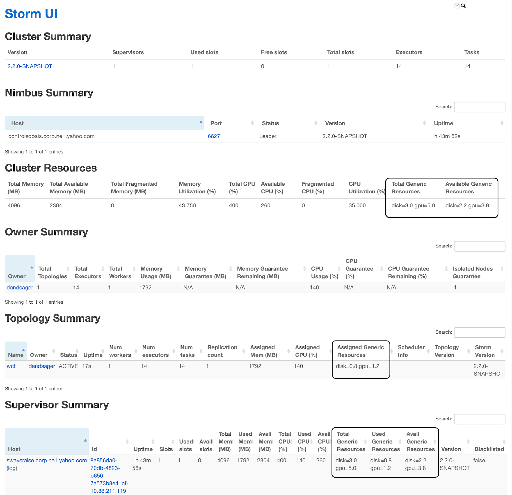

Generic Resources allow Storm to reference arbitrary resource types. Generic Resources may be considered an extension of the resources enumerated by the Resource Aware Scheduler, which accounts for CPU and memory.
For a Storm Topology, the user can now specify the amount of generic resources a topology component (i.e. Spout or Bolt) is required to run a single instance of the component. The user can specify the resource requirement for a topology component by using the following API call.
public T addResource(String resourceName, Number resourceValue)
Parameters:
- resourceName – The name of the generic resource
- resourceValue – The amount of the generic resource
Example of Usage:
SpoutDeclarer s1 = builder.setSpout("word", new TestWordSpout(), 10);
s1.addResouce("gpu.count", 1.0);
A storm administrator can specify node resource availability by modifying the conf/storm.yaml file located in the storm home directory of that node.
supervisor.resources.map: {[type<String>] : [amount<Double>]}
Example of Usage:
supervisor.resources.map: {"gpu.count" : 2.0}
